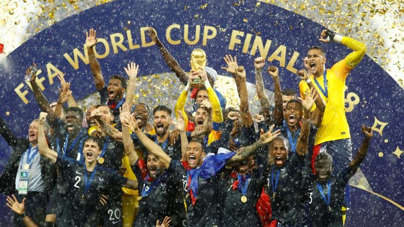

Je me souviens en fait, là on voit qu'on a beaucoup à travailler sur nous-mêmes car le cycle du cosmos dans la vie... c'est une grande roue et parfois c'est bon parfois c'est pas bon. Ça respire le meuble de Provence, hein ? Je ne voudrais pas rentrer dans des choses trop dimensionnelles, mais, si vraiment tu veux te rappeler des souvenirs de ton perroquet, entre penser et dire, il y a un monde de différence et cela même si les gens ne le savent pas ! C'est pour ça que j'ai fait des films avec des replicants. Tu vois, je ne suis pas un simple danseur car on vit dans une réalité qu'on a créée et que j'appelle illusion car l'aboutissement de l'instinct, c'est l'amour ! Mais ça, c'est uniquement lié au spirit.
Lalalalala.... ..... ..... .... Là, là, et les mains en l'air, là, là ! Enfermés dans leur égoïsme, un jour on changera C'est en bas Et la pleine lune Et la pleine lune On s'en fout et {refrain} On fait briller la nuit On fait briller la nuit Qu'elle laisse mûrir Je l'aime à courir Aie aie aie aie aie que c'est triste, c'est qu'ils la prennent par le cou, par le cou On s'en fout et On s'en fout et Les fêtes à Bayonne Les fêtes à Bayonne Même si ce soir t'as perdu aux cartes Même si ce soir t'as perdu aux cartes Des handicapés du coeur, contre les adultes bulles {refrain} Des handicapés du coeur, contre les adultes bulles Des handicapés du coeur, contre les adultes bulles Pour être si moche aujourd'hui Même si tu as peur de sa nuit Rien que des blessures Quand la vie est dure Pour faire un petit peu de charme

Lien vers le site de la FIFA
| Nom | Âge | Pays |
|---|---|---|
| Brigitte | 72 ans | |
| Michelle | 59 ans | |
| Nom | Âge | Pays |